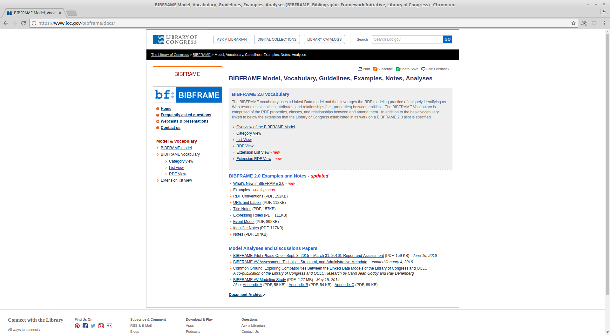
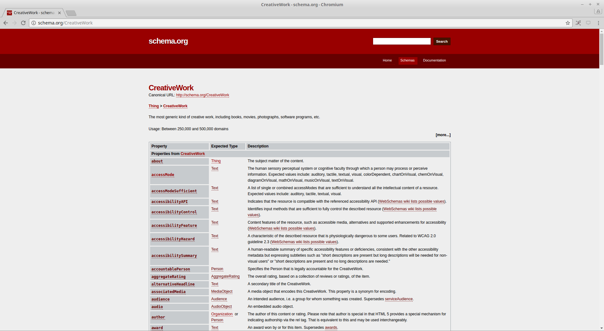
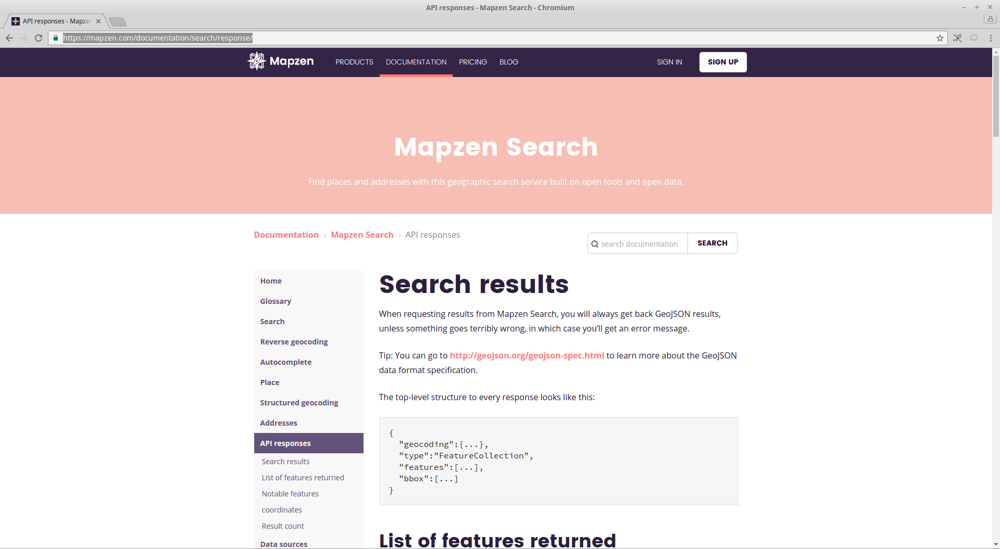
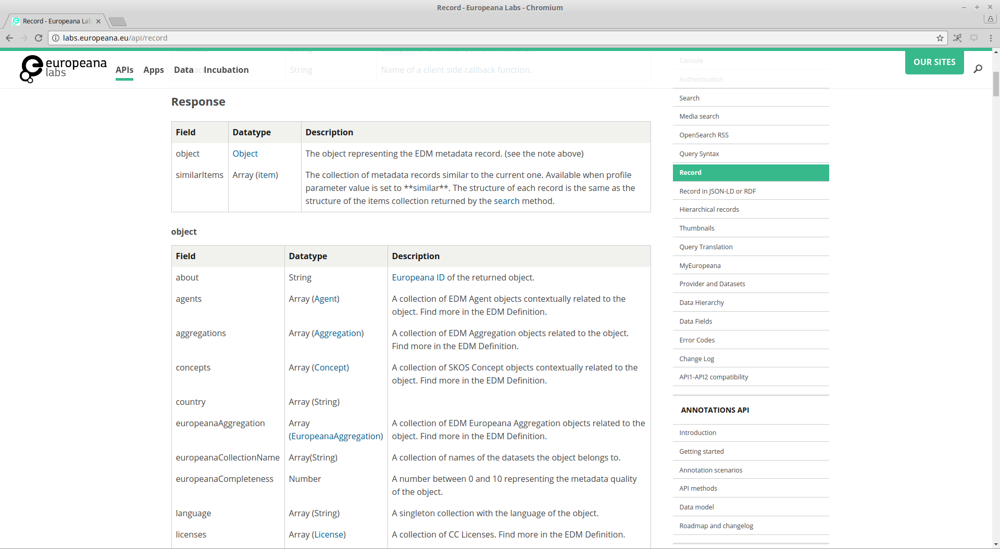
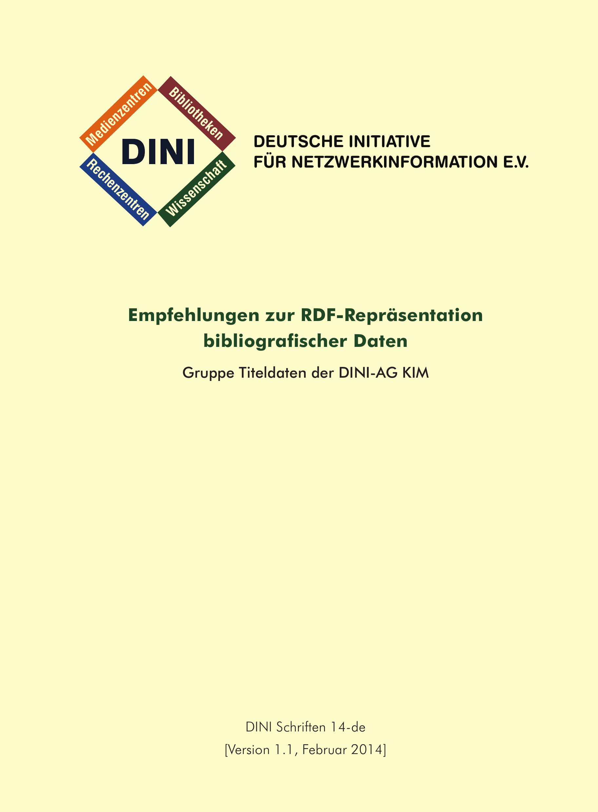
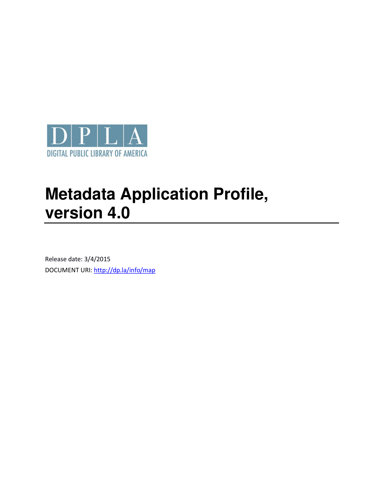
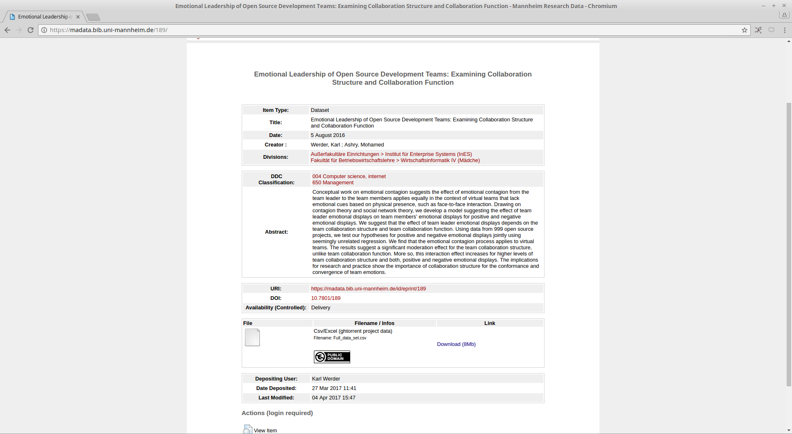

Best Practices der
Datendokumentation
Session beim DINI-KIM-Workshop 2017
Adrian Pohl /
@acka47
Linked
Open Data, Hochschulbibliothekszentrum NRW (hbz)

Mannheim, 2017-05-04
This presentation:
http://slides.lobid.org/kim-ws-2017

Worum geht es?
Dokumentation, die
elektronisch, z. B. online, oder gedruckt vorliegende Materialzusammenstellung, die als Gebrauchsanleitung für ein Gerät, ein technisches System, eine Software o. Ä. dient
Quelle: Duden
Hier: Dokumentation von Datenangeboten im Web
Genauer: Dokumentation von Metadatenschemata & ihrer Verwendung
Beispiele
Ontologien/RDFS-Vokabulare
Ontologien/RDFS-Vokabulare
API-Responses
API-Responses
Application Profiles
Application Profiles
Datasets

Datasets

Quelle: Andromeda Yelton's SWIB16 Keynote; Foto: Welcome by alborzshawn (CC-BY)
Ziele
Beispiele guter (und schlechter) Dokumentation sammeln
Fragen aufwerfen
Perspektiven
Dokumentation erstellen & pflegen
Dokumentation nutzen
Perspektiven
Dokumentation erstellen & pflegen
Dokumentation nutzen
Ablauf
| Sammlung von Beispielen, Best & Worst Practices | Gruppen | 30 min. |
| Vorstellung lobid-Dokumentation | Plenum | 15 min. |
| Diskussion / Ausblick | Plenum | 20 min. |
Gruppenarbeit
Sammlung von Beispielen, Best & Worst Practices
Findet euch in Gruppen von 2 bis fünf Personen.
Fragen
(Antworten hierhin: https://goo.gl/6kGh0U)
An/Mit welchen Vokabularen, Datasets etc. habt ihr in den letzten Monaten gearbeitet? (5 min.)
Sucht euch Angebote aus, deren Dokumentation ihr hier näher betrachten wollt.
(Maximal ein Angebot pro Gruppenmitglied)
Dokumentation, die
elektronisch, z. B. online, oder gedruckt vorliegende Materialzusammenstellung, die als Gebrauchsanleitung für ein Gerät, ein technisches System, eine Software o. Ä. dient
Quelle: Duden
Dokumentation unterstützt den Gebrauch eines Angebots
D. h. die Bewertung einer Dokumentation hängt ab vom jeweiligen Gebrauch/Anwendungsfall.
Zu welchem Zweck habt ihr euch das Angebot angeschaut? (5 min.)
Bsp.: Allgemeine Evaluierung der Dtenqualität, Einbindung in eigene Service, Datenanreicherung